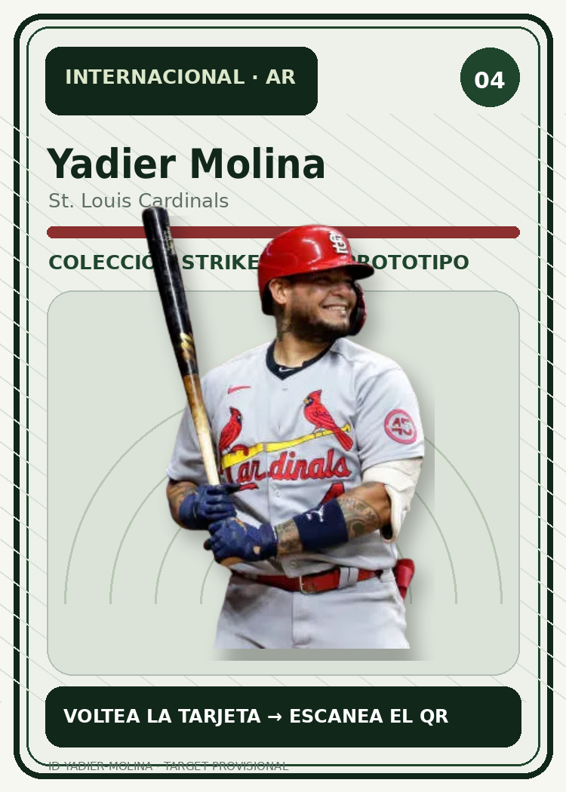

Listo para iniciar
STRIKEZONE · IMAGE TRACKING
Yadier Molina
Apunta la cámara al reverso .

Modelo actual
Pelota 3D
Puedes girar la pelota, moverla con dos dedos, acercar/alejar y tocar para hacerla saltar.
La primera vez puede tardar unos segundos mientras se prepara el reconocimiento del reverso de la tarjeta. Después se abrirá la cámara.
1 dedo: gira · 2 dedos: mueve + zoom · toque: animar
Jugador
La arquitectura queda preparada para narración, video y nuevas animaciones de modelos GLB.
No se pudo iniciar la experiencia AR.
Revisa el permiso de cámara y la conexión a internet.